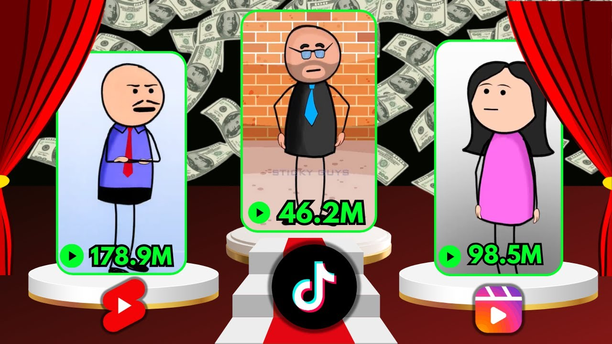
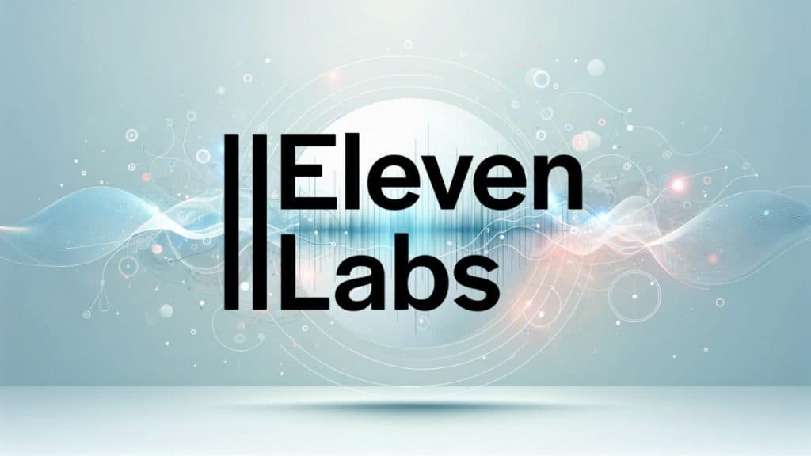
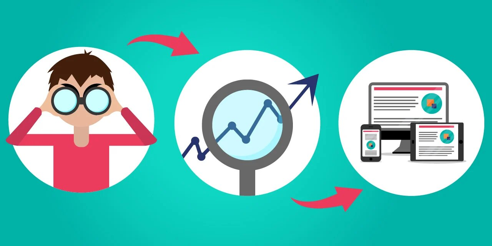

Planification de Vidéos
L'utilisation des outils Adobe et Eleven Labs a été centrale dans la stratégie de communication numérique du
cabinet du Docteur Quinty. Pour maximiser la visibilité et l'accessibilité, un accent particulier a été mis
sur la création de vidéos animées destinées aux plateformes sociales telles qu'Instagram, TikTok et YouTube.
Ces vidéos avaient pour but de promouvoir les services du cabinet de manière visuelle et engageante.

Animations
En utilisant un personnage animé nommé "Sticky", nous avons pu rendre les vidéos non seulement informatives
mais également divertissantes. "Sticky" a été conçu pour capturer l'attention des spectateurs tout en
expliquant des procédures complexes ou en annonçant des événements du cabinet, le tout dans un format facile à
comprendre. Cette approche a aidé à dédramatiser les soins orthodontiques et à les rendre plus accessibles à
un public plus jeune.

Génération de Contenu Personnalisé et Engageant
Grâce à mon expérience antérieure en tant que vidéaste YouTube, j'ai pu apporter une touche de créativité
supplémentaire aux vidéos. J'ai conçu des scripts qui permettaient à "Sticky" d'ajouter des éléments d'humour et des interactions précises et dynamiques qui reflètent une compréhension
approfondie des attentes et des besoins des patients. Cette personnalisation vise augmenté l'engagement des
utilisateurs mais a également renforcé la relation entre les patients et le cabinet, en créant un sentiment de
familiarité et de confiance.

Les vidéos que j'ai réalisé
Eleven Labs a été utilisé pour donner vie à "Sticky", en lui fournissant une voix synthétique qui pouvait
être ajustée pour correspondre au ton et à la personnalité du personnage. Les voix générées par Eleven Labs
ont été choisies pour leur clarté et leur capacité à évoquer une présence rassurante et professionnelle, ce
qui est crucial dans le contexte médical.

Impact sur la Visibilité et l'Accessibilité
Le Docteur Quinty a insisté sur l'importance de rendre les soins orthodontiques visibles et accessibles à
tous. En réponse, ces vidéos ont été conçues pour être facilement accessibles, avec des légendes et des
descriptions claires, assurant qu'elles puissent être comprises par un large éventail de patients, y compris
ceux qui pourraient avoir des difficultés de compréhension. En outre, le
caractère engageant et informatif des vidéos a aidé à démystifier les procédures orthodontiques, encourageant
plus de patients à considérer et à comprendre les traitements proposés.